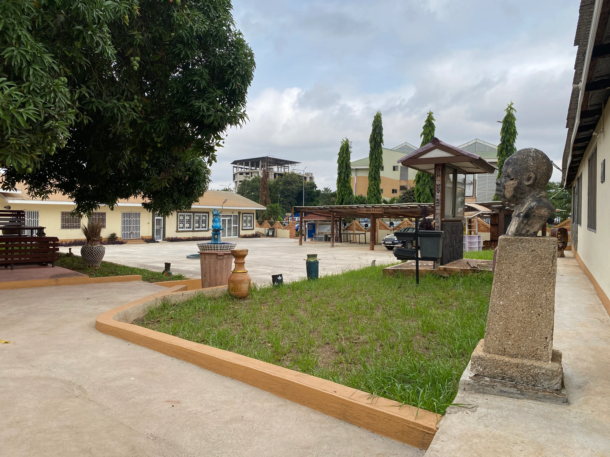

Academic Teaching
Six craft disciplines taught to professional standard, underpinned by Product Design and CAD methodology across all four years.
Founded in 1976 as the Institute of Rural Art and Industry (IRAI), DIAT is the only university department in Ghana dedicated entirely to indigenous craft disciplines — taught not as cultural history but as living, professionally viable creative practices.
Every student learns Computer-Aided Design before touching clay, metal, leather, or wood. That CAD-to-craft approach bridges ancient Ghanaian tradition with the demands of contemporary global markets.
Read Our Story
Six craft disciplines taught to professional standard, underpinned by Product Design and CAD methodology across all four years.
Commissioned artwork, bespoke craft production, and design services offered to individual, corporate, and institutional clients.
Three-month nationwide internship embeds students with artisan communities across Ghana, formally attributing indigenous craft knowledge.
Before any student throws clay, cuts leather, or forges metal, they design it digitally. Product Design runs across all four years — the intellectual and technical spine that connects every craft discipline at DIAT.
Read moreFrom raw clay preparation through wheel-throwing, kiln firing, and surface decoration informed by Ghanaian pottery traditions.
Read moreKente weaving, adinkra printing, batik, macramé, and contemporary fibre art rooted in Ghana's extraordinary textile heritage.
Read moreTanning, pattern-making, stitching, and finishing — from West African craft traditions to contemporary market-ready leather goods.
Read moreLost-wax casting, forging, welding, and fabrication — connected to the Ashanti goldsmithing heritage and modern architectural metalwork.
Read moreSustainable natural materials woven, bent, and constructed into furniture, decorative objects, and architectural installations.
Read moreJoinery, carving, turning, and furniture-making rooted in Ghana's tradition of carved stools, ceremonial doors, and royal objects.
Read moreIn 2026, DIAT marks half a century of preserving, formalising, and promoting Ghana's indigenous craft heritage within one of Africa's foremost technical universities.
Read Our History
Partnering with the Mastercard Foundation and artisan communities across Ghana, DIAT's three-month nationwide internship embeds Year 3 students with indigenous craft practitioners — documenting, learning, and formally attributing living cultural knowledge.
Receive news about exhibitions, new artworks, and department events from DIAT, KNUST Ghana.